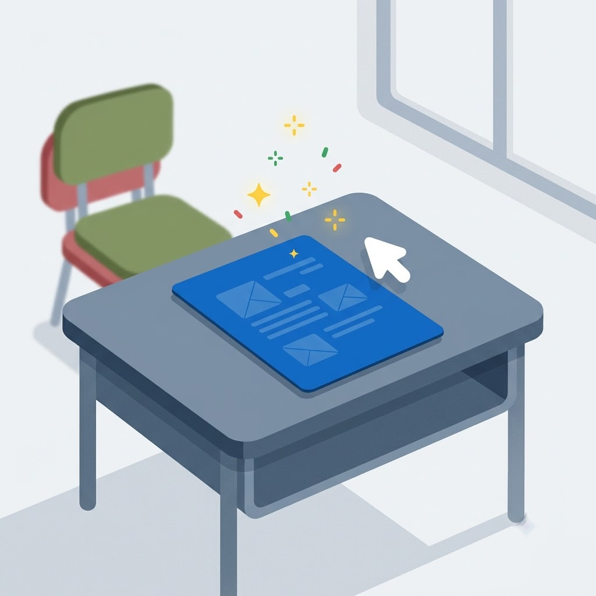

HUNGLUN TECHNOLOGY
Luno 綸諾・互動式評量
依年級、科目、範圍與難度出題，附完整答案卷，可下載 Word（.docx）與 PDF，也能直接讓學生線上作答。

有任何問題？請點鴻綸科技官方網站
有任何問題？請點鴻綸科技官方網站
可以是掃描檔、手機拍的照片，或直接丟 PDF（會自動轉成圖片）。最多 10 頁、整份 5MB。
📂 點此選擇卷子（圖片或 PDF）
按「AI 自動抓」讓系統先幫你框一輪，再用滑鼠或手指把框拖到正確位置。 AI 抓不準是正常的，它只負責省掉你從零開始框的力氣。
選擇題／填空題填了答案就會自動判分；手寫題交給你批改（可按 AI 協助）。